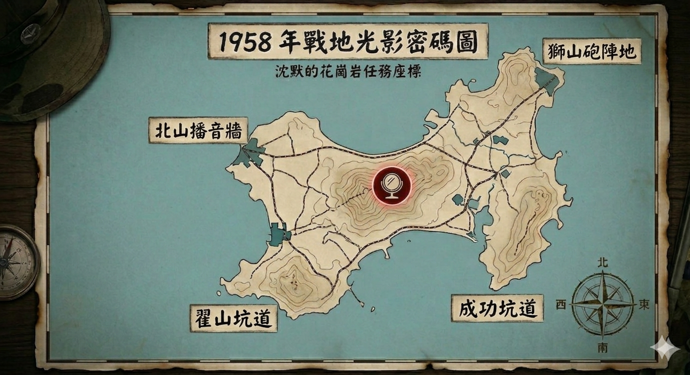

前言故事
【 檔案編號：1958-0823 戰地觀測紀錄 】
1958 年 8 月 23 日 18 時 30 分，金門的天空瞬間被撕裂。數萬發砲彈如同赤紅的暴雨頃刻落下，整座島嶼在劇烈的震動中發出哀鳴。不到一小時，主要的無線電塔遭到精準打擊，通訊中斷，全島陷入了一片死寂與火海。
在太武山深處的坑道裡，通訊班長老陳抹去臉上的花崗岩粉塵，看著已經斷訊的電台發出刺耳的雜訊。他知道，如果無法將關鍵的防禦數據傳回後方，這座島嶼將會徹底沈沒。在電力耗盡前，他利用僅存的光學折射器材與影子投射技術，將那串決定命運的密碼強行嵌入了這座島嶼的地景之中。
「那是我們唯一的火種。」老陳在泛黃的日誌末頁寫下這句話。隨後，地層傳來更沉重的轟鳴——敵方第二波砲擊已經進入最後倒數，預計 15 分鐘後發起毀滅性打擊。
⚠️ 系統警報： 目前全島正處於強烈的電磁干擾下，請在砲火覆蓋前，找回那段隱藏在光影間的沈默真相。
老陳的遺留文件
「通訊快撐不住了。我把最後的線索，徹底封死在影子裡。為了避開敵方的無線電偵測，我將最終的頻率數據，隱匿在翟山坑道那片終年不散的水坑倒影之中。
聽著，在這座島面前必須收起傲慢、放下身段，只有懂得謙卑的人，才看得透那些幻象。
請將你們於坑道內獲取的關鍵訊息對應地圖上的精準座標，運用光學原理將光線引領至正確的藏匿位置。唯有如此，倒影中的線索碎片才會重新拼湊，顯現出通往最終真相的道路。」
[ 偵測到加密影像數據 ]

📟 解密訊號終端機
「請輸入觀測所得的六位數代碼。
這組數字，曾如烙印般刻在這座島嶼慘痛的記憶裡。它是代價、是鮮血，也是這片花崗岩沈默了半個世紀的教訓。輸入它，讓歷史重新與現實同步。」
🔓 傳輸成功：歷史的見證
數據同步完成。復原代碼：474910
【 關於 474,910 的背景故事 】
這個數字並非虛構，它精確紀錄了 1958 年「八二三砲戰」期間，在短短 44 天內，投射在金門土地上的砲彈總數量。
當時，平均每平方公里的土地上承受了超過 3,000 發砲彈。這組數字不僅是歷史的紀錄，更是那段「沈默的花崗岩」歲月裡，無數守軍與居民堅韌意志的證明。現今，這些遺留下來的砲彈殼，許多已被鍛造成為代表和平與工藝的「金門鋼刀」。
[ 終端已鎖定：任務圓滿達成 ]